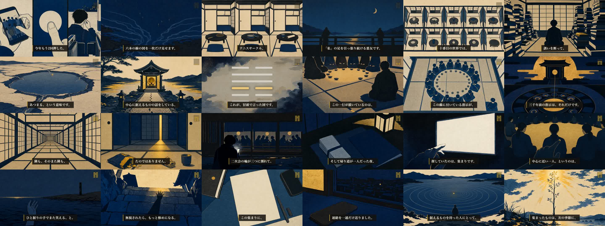
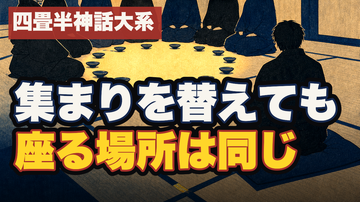

9分09秒・30シーン。機械ゲートは全通過、fork採点も台本・サムネとも合格圏。アップロードはまだしていません。ここで承認をもらってから 2026-09-21 04:00 JST の予約投稿に進みます。
概要欄（§4）は自動生成＋db逐語なので、気になる箇所があれば指摘だけください。読者ゲートが挙げた違和感2点は §6 に隠さず載せています。
※ これは軽量プレビュー（15MB）。本編は releases/079/ep59_yojouhan_sui.mp4（713MB・9分09秒・1920×1080）。

| 型 | H58 痛み先頭型 <痛みの一文>。｜<作品名>×<卦>（第N話 suffix なし・末尾タグなし） |
|---|---|
| 文字数 | 37字（デスクトップ表示の折返し内） |
| なぜこの案か | fork採点は32字の短縮案Aを推したが、採点者自身が「冒頭ナレーションを動かせないならC採用に倒す」と付記。本編の1行目がこの文言でレンダ済み＝動かせないため、タイトルと冒頭の一致を優先してC案を採った。 |
| share_line | 集まりを替え続けている人は、集まり方をまだ替えていない。 |

| 題字 | 集まりを替えても／座る場所は同じ（8字・7字） |
|---|---|
| 作品名タグ | 左上・朱の墨帯「四畳半神話大系」 |
| 背景 | V_03_06＝円く並んだ盃の輪と、そこから半歩外れて座る後ろ姿 |
| 視覚的疑問（M32） | 「なぜこの一人だけ輪の外にいるのか」の1点だけ。答え（中心に近い一人と結べ）は本編の種明かしまで渡さない |
残った採点者の宿題（今回は直していない・次回以降）：題字位置が下半分・左寄せ2行で直近5本のうち4本と型が近い → 次は縦組みや上寄せで位置をローテーションする。
| 文字数 | 6,676バイト（YouTube上限5,000字の範囲内） |
|---|---|
| チャプター | 30本（実レンダのタイミングから機械生成） |
| 卦の説明 | db/hexagrams.json の逐語のみ。語り手の読みは「※これは語り手の読みで原典の直訳ではありません」と明示して分離 |
| 法務 | 批評目的の明示・引用範囲の限定・AI利用の開示（TTS/挿絵/六爻図）・免責を記載 |
集まりには顔を出している。なのに、帰り道はいつも一人だ。 合う集まりを探して、サークルも職場も勉強会も移ってきた。ここじゃなかった、と思うたび、次を探した。でも、外れを引き続けているにしては、回数が多すぎます。 「四畳半神話大系」の名前のない「私」は、その選び直しを世界ごと何周もした人です。九つの世界で入る先を替え、十番目では「どこにも入らない」ことまで試して、全敗します。その構造を、易経の「萃（すい）」で読み解きます。 ■〈名作×易経・全64話〉のコレクションの一話 ▼ チャプター 0:00 集まりには顔を出している。なのに帰り道はいつも一人だ 0:16 合う集まりを探して、移ってきた側です 0:26 三千年前からの名前──あとで六本の線の図を見せます 0:37 四畳半神話大系──薔薇色のキャンパスライフを求めて 0:51 1話ごとに世界が分かれる──入り直しではなく、別の選択をした世界 1:11 どの世界にも現れる腐れ縁・小津 1:31 九つの世界と、十番目──全部試して、全敗 1:55 「薔薇色なんて幻想だ」と決めて、どこにも入らなかった世界 2:11 易経──変化を64のパターンに分けた本 2:27 萃──あつまる。地の上に、沢 2:39 集まりの卦なのに、書いてあったのは集まり方ではなかった 2:54 王は廟に至る──先に必要なのは、中心に据えるもの 3:12 六爻図──集める力を持つのは、四番目と五番目の二本だけ 3:37 三番目の線「集まりて、嗟くごとし」──輪の中で、ひとり 3:57 指示は「別の集まりを探せ」ではなかった 4:18 結ぶ相手は、一人でいい──読んで、正直、腹が立った 4:35 無限に連なる四畳半に閉じ込められたのは、何も選ばなかった私 4:53 気づいたから、外に出られた（外に出てから気づいたのではない） 5:13 外に出た「私」が最初に向かったのは、一人のところだった 5:29 二次会の輪が三つに割れて、五分だけ外にいた夜 5:46 孤独の原因を、毎回、集まりの側に置いてきた 6:07 検索窓に打ち込んでいたのは、いつも同じ形の言葉 6:24 先に決めればよかったのは、行き先ではなく、据えるもの 6:41 中心に近い一人とは誰か──幹事ではなく、その店を選んだ人 6:57 使えなかった二本──呼ぶのが負けだと思っていた 7:22 送る前の不安に、いちばん上の線が答えている 7:47 退会ボタンを押す前に、一行だけ書いてみた 8:08 連絡を一通だけ送った。返事は、まだ来ていない 8:23 集まりは、選び直すものではなく、育つものになる 8:47 萃の次は、升──集まったものは、次の季節に昇りに変わる ▼ このチャンネルについて アニメ・漫画は、現代の寓話。 誰もが結末を知っている物語を、易経──3000年にわたって人間の変化を記録してきた古典──の64のパターンで読み解き、人生の教訓を持ち帰るシリーズです。全64話。 ▼ 今回のパターン 萃（すい）／沢地萃（たくちすい）：64卦の45番目。上が兌（沢）、下が坤（地）。低いところへ水が寄り集まって湖になる形で、人が集まること、そのものを扱う卦です。六本の線のうち、集める力を持つ強い線（陽）は四番目と五番目の二本だけで、残る四本は集まる側です。 卦辞は「萃は亨る。王、廟に至る」。集まりの卦なのに、最初に置かれているのは集まり方でも人数でもなく、中心に据えるものの話です。注釈は「人を集めるには、群れの中心となる人が要る。そして人を集める者は、まず自分自身の中が集まっていなければならない」と続けます。 この回の背骨は下から三番目の線です。「集まりて、嗟くごとし（集まりの中で、ため息をつく）」。注釈は「周りの人々はもう互いに群れを作ってしまっていて、彼だけが孤立している」と描写し、その指示は「別の集まりを探せ」ではなく「輪の中心に近い一人と、断固として結べ。その人が、閉じた輪へ入れてくれる。最初は外の者として少し恥ずかしい思いをしても、それは過ちではない」です。 一番下の線には「呼べば、ひと握りの手で、また笑える」、下から二番目には「行き先を自分で決めつけるな」、いちばん上には「結ぼうとして誤解され、涙を流しても、咎はない。その嘆きが、相手の目を覚まさせることさえある」とあります。 ※動画内の「輪の外にいる時間は、集まりが外れだった証拠ではなく、中心との距離の問題」は語り手の読みで、原典の直訳ではありません。卦・爻の言葉と、語り手が考えた実践は、動画内でも分けて述べています。 ▼ 参照作品 『四畳半神話大系』（原作：森見登美彦／太田出版・角川文庫、アニメ：2010年 フジテレビ「ノイタミナ」／監督：湯浅政明／アニメーション制作：マッドハウス） ※作品の批評・研究を目的として、必要最小限の範囲で作品名・登場人物名・作中の出来事（並行世界の構成、無限四畳半からの脱出を含む）に言及しています。映像・画像の引用は行っていません。作中事実は Wikipedia および各話解説の複数照合で確認しています。 ▼ AI利用の開示 ナレーションは Irodori-TTS（v4-Small）による音声合成です。挿絵は生成AIによる木版浮世絵風のイラストで、既存作品のキャラクター意匠は描いていません（人物は顔を描かない後ろ姿・シルエットです）。六爻図はデータベースから機械的に描画したものです。構成・脚本は人間が監修しています。 ▼ 免責 本動画は易経という古典を用いた読み物・考察であり、占い・予言・医療や法律の助言ではありません。作品の解釈は一つではなく、ここで示すのは数ある読み方のうちの一つです。 #易経 #アニメ考察 #四畳半神話大系 #萃 #森見登美彦 #人生哲学
| essay-preflight script | PASS — 幕構成 v2.3・幕1尺 36s以内・対比投入 90s以内・字数・AI臭・hook_scenes 3件・fact_check 22行（未確認0） |
|---|---|
| essay-preflight visuals | PASS — スタイル行一字一句・記述固有性・Cフラット混入なし・三色ガード |
| essay-preflight timing | PASS — 字幕全文一致・カット順・カット資産の実在（新設）card 0/clip 29/still 1 |
| essay-preflight promise | PASS — 冒頭0-8秒に「四畳半神話大系 私／易経・萃（すい）」 |
| essay-preflight mix | PASS — 尺 549.1s・ピーク −4.5dB・幕間BGM −34.2dB・シーン境界の黒落ちなし |
| identity-audit | PASS — 全カット「不明」（作品もキャラも同定されず）／顔なし・トレースなし・画像内文字なし・写実化なし |
| fork採点 台本 | 合格圏（essay-script 採点表） |
| fork採点 サムネ | 92点 / 合格ライン90 |
| 読者ゲート blind-reader | 78点（合格70）・完読・「いいねを押す」 |
| yt-publish 公開ゲート | dry-run PASS（simple-loop 経路：宣言ファイル検証＋mix再実行＋読者ゲート記録） |
基準を一切見せていない読者役が挙げた違和感です。78点・完読・いいねを押す判定なので機械では止めていませんが、判断材料としてそのまま載せます。
| 公開日時 | 2026-09-21（月）04:00 JST ／ スロット claim 済み 2026-09-21_long.txt id=079 |
|---|---|
| 公開設定 | private + publishAt（予約公開）。フィールドは publish_at のみ使用 |
| アップロード物 | 本編mp4（713MB）＋サムネ＋概要欄＋タイトル |
| AI開示フラグ | 「いいえ」（様式化された浮世絵＝写実誤認なし。既定どおり） |
| 実行後にやること | yt-schedule-verify で予約の真偽確認 → registry status を scheduled へ → pivot-cohort に H75 を登録 → 判定タスク（2026-09-28）を coord に登録 |